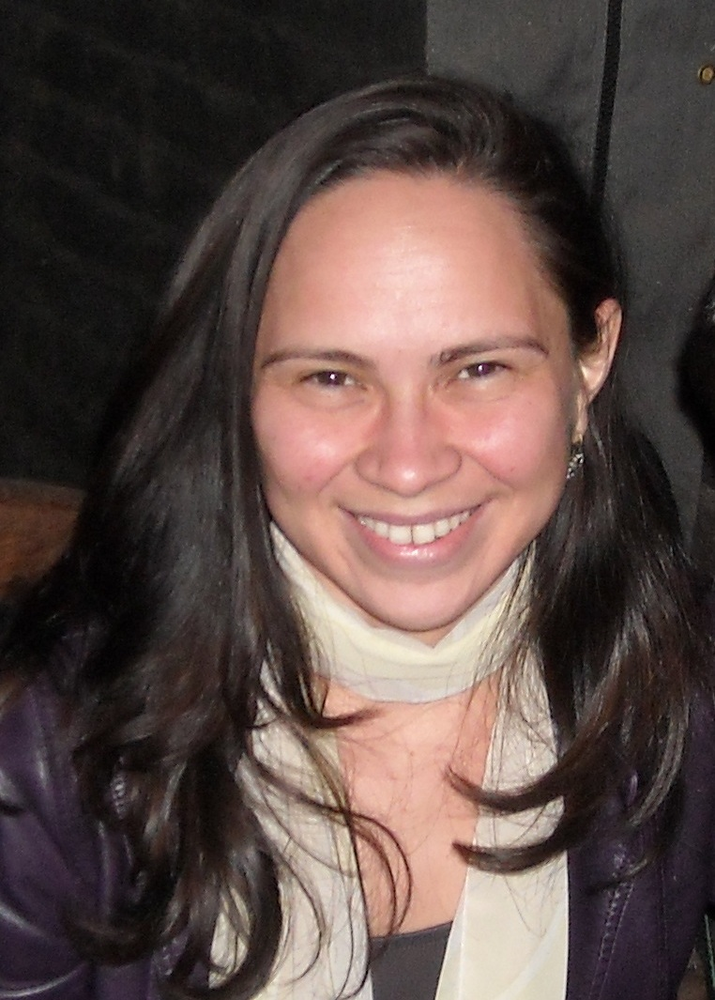

Keynote Speakers
October 22nd (9:30-10:30)
Marsha Chechik
Title: Assuring Product Lines of Software Systems
Abstract: Assuring the reliability of complex systems is a difficult and expensive undertaking. These costs are further exacerbated when a family of similar products with varying features need to be assured, or when products evolve due to changing requirements or to introduce new functionalities. In this talk I will discuss methods for assuring reliability of such systems, from their representation as product lines to their efficient analysis to methods for building and maintaining assurance cases for such systems using templates.
Session Chair: Regina Moraes
Bio: Marsha Chechik is Professor and former Chair in the Department of Computer Science at the University of Toronto, where she holds Bell University Labs Chair in Software Engineering. In 2022, she served as Acting Dean in Faculty of Information. Her research interests are in the application of formal methods to improve the quality of software. She has co-authored numerous papers in formal methods, software specification and verification, computer safety and security, and requirements engineering. She is a member of IFIP Working Group 2.9 on Requirements Engineering, an Associate Editor-in-Chief of IEEE Transactions on Software Engineering and Associate Editor-in-Chief of Journal on Software and Systems Modeling. She has been Program Committee Chair of top software engineering and verification conferences: ASE'14, ESEC/FSE'21, TACAS'16, ICSE'18, FM'23, MODELS'24. She is Fellow of ACM, Fellow of Automated Software Engineering and Chair of ACM SIGSOFT.
October 23rd (8:45-9:45)

Corina Pasareanu
Title: Analysis of Perception Neural Networks via Vision-Language Models
Abstract: The analysis of Deep Neural Networks (DNNs), particularly those used as perception modules, is very challenging due to the networks' complex and opaque decision-making processes. Multi-modal Vision-Language Models (VLMs) such as CLIP offer an exciting opportunity to interpret the representation space of vision models using natural language. VLMs have been trained on a large body of images accompanied by their textual description, and are thus implicitly aware of high-level, human-understandable concepts describing the images. In this talk, we report on on-going work that seeks to leverage VLMs for the formal analysis and run-time monitoring of requirements expressed in terms of natural-language concepts, as well as debugging of perception modules.
Session Chair: Catia Trubiani
Bio: Corina Pasareanu is an ACM Fellow and an IEEE ASE Fellow, working at NASA Ames. She is affiliated with KBR and Carnegie Mellon University's CyLab. Her research interests include model checking, symbolic execution, compositional verification, trustworthy AI, autonomy, and security. She is the recipient of several awards, including ETAPS Test of Time Award (2021), ASE Most Influential Paper Award (2018), ESEC/FSE Test of Time Award (2018), ISSTA Retrospective Impact Paper Award (2018), ACM Impact Paper Award (2010), and ICSE 2010 Most Influential Paper Award (2010). She has been serving as Program/General Chair for several conferences including: FASE 2026, ICSE 2025, SEFM 2021, FM 2021, ICST 2020, ISSTA 2020, ESEC/FSE 2018, CAV 2015, ISSTA 2014, ASE 2011, and NFM 2009. She is on the steering committees for the ICSE, ETAPS, TACAS and ISSTA conferences. She is currently an associate editor for IEEE TSE and for STTT, Springer Nature.
October 24th (9:30-10:30)

Michele Nogueira
Title: Data-Driven Resilience: A Double-Edged Sword for Security and Privacy
Abstract: In an increasingly connected and data-rich world, resilience is no longer just about withstanding failures — it's about adapting, learning, and recovering in real time. At the heart of this evolution lies data: vast, dynamic, and increasingly central to decision-making in secure and dependable systems. But while data-driven strategies have opened new frontiers in threat detection, system adaptation, and anomaly prediction, they have also introduced new vulnerabilities. From training set poisoning in machine learning models to metadata leaks in system logs, data can empower both defenders and adversaries. This keynote explores the paradox of data-driven resilience — how the datasets that enable adaptive defense and fault tolerance can also expose systems to novel attack vectors and privacy breaches. Drawing from real-world case studies, research insights, and lessons from critical infrastructures, we will examine the trade-offs inherent in building resilient systems through data.
Session Chair: Yulei Sui
Bio: Michele Nogueira is an Associate Professor in the Computer Science Department at Federal University of Minas Gerais (UFMG), Brazil. She received her doctorate in Computer Science from the University Pierre et Marie Curie - Sorbonne Université, France. She was on a sabbatical leave at Carnegie Mellon University, USA (2016-2017). Her research interests include wireless networks, network security and dependability. She has worked on providing resilience to self-organized, cognitive and wireless networks by adaptive and opportunistic approaches. Today, her research focuses on creating network security intelligence supported by data science. Dr. Nogueira was one of the pioneers in addressing survivability issues in self-organized wireless networks, being the work “A Survey of Survivability in Mobile Ad Hoc Networks”, one of her prominent scientific contributions. She has been a recipient of Academic Scholarships from Brazilian Government in her undergraduate and graduate years, and of international grants such as from the ACM SIGCOMM Geodiversity program. She served as Associate Technical Editor for the IEEE Communications Magazine. She served as chair for the IEEE ComSoc Internet Technical Committee. She is an ACM and IEEE Senior Member.
Bruno Fonseca (Industry Keynote)
Title: Dev Prime - Scaling your company for availability
Abstract: The introduction of AI into the developer workflow has fundamentally changed the conversation around productivity, but merely adopting tools is not enough. Drawing on insights from the 2025 DORA State of AI-assisted Software Development report, this keynote argues that AI is an amplifier that magnifies an organization's pre-existing technical and cultural capabilities. It will show why the greatest returns on AI investment come not from the models themselves, but from the maturity of the underlying software delivery system. We will explore a real-world transformation, using the journey of Unico IDTech as a prime example. This story demonstrates how creating a robust and consistent engineering structure (Dev Prime) coupled with a radical shift to user-centric monitoring (SLOs) and reliability engineering created the necessary high-quality Platform foundation. When this foundation is present—characterized by clear governance, healthy data ecosystems, and foundational practices—AI's benefits (such as throughput and organizational performance gains) are dramatically amplified. This session provides technology leaders with a clear, data-driven mandate: to maximize the value of AI, you must first invest in and rationalize your foundational structure, treating your internal platform as the critical enabler for sustainable AI-driven excellence.
Bio:Bruno Fonseca is a Senior Engineer Director at Unico IDTech specializing in the design, implementation, and scaling of highly reliable, large-scale distributed systems. His career spans foundational research and executive leadership in high-growth, high-stakes technology environments. Currently at Unico IDtech (https://unico.io), where he leads the strategic architectural vision and champions the adoption of world-class software engineering practices across core identity, anti-fraud and high-criticality systems (IDCloud and IDPay). His work has centered on developing robust engineering structures and shifting organizational focus towards user-centric reliability engineering principles, such as Service Level Objectives (SLOs), to manage system dependability at scale. His experience is marked by periods of immense growth and technical challenge: Google: Over thirteen years at Google in Brazil. A key contribution was the conception and implementation of Ares, Google's Anti-Abuse infrastructure, designed to handle 2M classifications per second on all Google products. He also contributed to different Google products including Orkut, Google+, Google Books Search, Google News and Google Scholar. Loggi: As VP of Engineering and Product, he was instrumental in scaling Loggi's logistics platform, driving a 10x growth in delivered packages. This involved leading teams focused on complex optimization algorithms (e.g., dynamic Vehicle Routing Problems), fraud detection, and robust Site Reliability Engineering (SRE) practices. Mr. Fonseca holds a Master of Science (MSc) in Computer Science from the Universidade Federal de Minas Gerais (UFMG), where his research focused on improving query suggestions in search engines. He is deeply committed to combining academic rigor with industry practice to build large, maintainable, and highly reliable systems and cultivate strong engineering organizations.